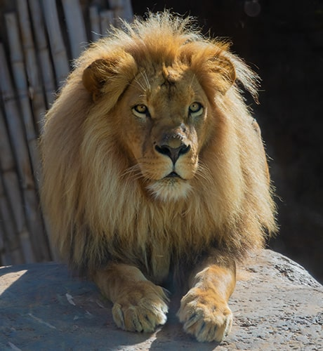

El León
El león
El león (de nombre científico Panthera leo) es un felino carnívoro de gran tamaño. Es originario del África Subsahariana y de ciertas regiones de la India, en donde constituye el mayor depredador de la cadena trófica. Es uno de los animales salvajes más conocidos y temidos por la humanidad, por su fiereza, pero también admirados y representados en símbolos, relatos y esculturas.

Los antepasados de los leones aparecieron hace 4,1 a 5,9 millones de años, y de ellos derivan todas las cuatro especies del género Panthera: el tigre, el jaguar, el león y el leopardo. Estas últimas dos se separaron evolutivamente hace 1,25 millones de años, y surgieron como los conocemos hoy en África hace entre 1 millón y 800.000 años.
Durante el Pleistoceno superior se extendieron a lo largo y ancho de los cinco continentes, dando origen así al extinto león americano y al puma, hasta que en la última glaciación, hace 10.000 años, se extinguieron en Europa, América y casi toda Asia.
La humanidad ha tenido contacto con leones desde tiempos ancestrales, y ha visto en ellos un símbolo de nobleza, ferocidad y masculinidad. Por eso, es común encontrarlos en relatos antiguos, en banderas de países, en escudos familiares e incluso como símbolo de uno de los cuatro evangelios bíblicos.
A pesar de ello y de ser potentes depredadores, los leones se hallan entre las especies vulnerables y susceptibles de extinción. En las últimas décadas sus poblaciones sufrieron un declive de entre un 30 y 50%, haciendo que su vida no sea viable por fuera de las reservas ecológicas delimitadas.
La pérdida de su hábitat y los conflictos con las poblaciones humanas son en parte causantes de este fenómeno, por lo que numerosos zoólogos del mundo colaboran para intentar aumentar los números de la especie en cautiverio.
Características
Como todos los felinos, los leones son cuadrúpedos y mamíferos. Poseen una cola larga, un pelaje corto y amarillento, así como una melena rubia u oscura alrededor del cuello en el caso de los machos. De dieta exclusivamente carnívora, son feroces cazadores, capaces de sujetar a la presa con sus garras y de rasgar grandes porciones de carne con sus afilados colmillos.
Son junto a los tigres los felinos más grandes que existen: pueden medir unos 2 a 3 metros (machos) o 1,80 a 2,7 metros (hembras) de longitud, y alcanzando un peso de 160 a 260 kg (machos) o 120 a 182 kg (hembras).
Por otro lado, su temperamento es más bien dormilón: dedican unas 20 horas diarias al descanso y la inactividad, teniendo en cambio sus períodos de socialización al ocaso y sus horas de cacería, por lo general, durante la noche. Dedican unas dos horas diarias a caminar y unos 50 minutos diarios a comer.
Los leones, al contrario del resto de los felinos, son criaturas bastante sociables, que suelen conformar manadas. Tradicionalmente se juntan hembras con algún vínculo familiar y un número menor de machos, junto a las crías de las primeras.
Es común verlos darse afecto mediante lamidas y restregones, así como marcar su territorio mediante la orina y mediante la presencia intimidatoria del macho dominante y sus feroces rugidos.
Hábitat
Los leones llegaron a ser una especie muy ampliamente difundida en África y el Oriente próximo, así como el subcontinente Indio. Actualmente, en cambio, se sabe que los leones salvajes habitan regiones muy restringidas del sureste y centro de África, así como en regiones muy puntuales del noroeste de la India.
Por naturaleza prefieren los herbazales y las sabanas, rara vez ingresando a regiones boscosas.
Alimentación
Se trata de criaturas eminentemente carnívoras, grandes cazadores de las llanuras africanas. La cacería se da mediante ataques coordinados y en manada, procurando aislar y sitiar a la presa lo más rápido posible, pues no tienen una resistencia física particularmente alta. De hecho, pueden alcanzar velocidades de hasta 60 kmph, pero sólo en distancias breves.
Sus presas predilectas suelen ser mamíferos grandes, como ñus, búfalos, impalas, cebras, jabalíes, ciervos o jirafas jóvenes, e incluso focas, si logran dar con alguna en la costa de Namibia. Si habitan cerca de rebaños de ganado, es probable que también se lleven alguna res de vez en cuando.
La cacería se organiza por sexos: las hembras cazan juntas, con ayuda ocasional de los machos, pero el producto de dicha cacería será para ellas y para las crías; los machos deben cazar por su propia cuenta el alimento.
Por último, los leones no son muy propensos a la antropofagia, pero siempre es posible que hechos aislados ocurran. En líneas generales, los leones tienen mucho más que temer al ser humano.